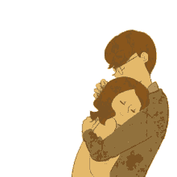

My Dear, Chelsea
Happy Valentines Day My Love,
Almost 1 year na tayo at hanggang ngayon hindi ko mapaliwanag sayo kung gaano ako kasaya pag kasama ka.
"Will You Be My Valentines?"
Every moment without you feels like a piece of me is missing. When you're not by my side, the world seems a little quieter, a little less bright—like the stars refuse to shine as beautifully without you here. I find myself thinking about your smile, the way your laughter feels like music, and how just one look from you can make my whole day better. I miss the warmth of your presence, the way your hand fits perfectly in mine, and the way time flies whenever we're together. No matter how far you are, my heart is always with you, longing for the next moment I get to hold you close again. I love you more than words can ever express, and every second away from you only makes me love you more. ❤️

I love you more than words can say.
Every moment without you feels incomplete, like I'm missing the most important part of me.
You are my everything—my happiness, my reason to smile, and the one I can't stop thinking about.
Do you feel the spark,
whenever our hands touch close?
Is this love we share?